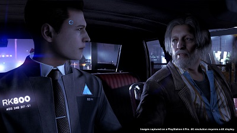
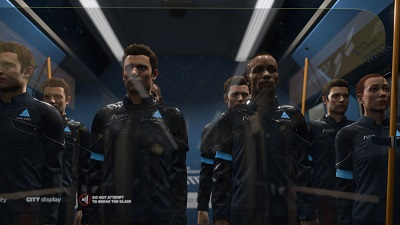

RESEÑA - DETROIT: BECOME HUMAN
Decir que Detroit: Become Human es uno de los videojuegos más ambiciosos de toda la historia no es una exageración. La obra de Quantic Dream nos presenta una narrativa increíblemente pesada y un gameplay que a pesar de carecer del frenesí que encontramos en otros géneros logra meternos de lleno en el mundo que vemos en pantalla. Detroit Become Human, a través de ingeniosos elementos se solidifica como el trabajo más completo de Quantic Dreams hasta la fecha, pero el ser una experiencia única en su tipo puede tornarse en un arma de dos filos.
Para entender el peso de Detroit Become Human hay que poner sobre la mesa algunos antecedentes de Quantic Dream y de su figura principal David Cage. Los últimos tres juegos de la desarrolladora, Indigo Prophecy del 2005, Heavy Rain del 2010 y Beyond Two Souls del 2013 habían tomado una ruta que se despedía de las mecánicas de juego tradicionales en favor de una experiencia que se parecía un poco más a un point-and-click pero con un dinamismo que le daba una profundidad nunca antes vista en el género. Detroit Become Human sigue este mismo estilo, presentando un gameplay de un interfaz minimalista que se mezcla perfectamente con el entorno y da un flujo natural a los comandos. Si algo hay que criticar es el hecho de que, como cualquier otro juego del tipo walking simulator, sufre de ser bastante estoico y rígido en ocasiones, haciendo que el movimiento de nuestros personajes contraste de una forma negativa con el resto del dinámico ambiente.

Sin embargo, en el caso de un título como Detroit: Become Human las mecánicas de juego deben de juzgarse en función de cómo armonizan con la trama. Hablar demasiado acerca de la misma es entrar en territorio de spoilers, así que mantendremos las cosas simples. Detroit: Become Human gira alrededor de tres androides, cada uno de ellos único en habilidades y personalidad. Tenemos a Kara, Connor y Markus. Dependiendo de cómo es que lidiemos con las situaciones que se nos presentan, estos androides perecerán o se mantendrán con vida para continuar con la historia. En este apartado es donde sale a relucir la cautivadora complejidad de Detroit: Become Human. A diferencia de Beyond Two Souls donde parecía que las decisiones que tómabamos eran intrascendentes, aquí hasta el más mínimo detalle tiene el potencial de cambiar la trama por completo. Toda esa idea del efecto mariposa se toma bastante en serio en el libreto. Gracias a las diferentes naturalezas de los androides que controlamos, cada uno de ellos tendrá su propia forma de ver el mundo e interactuar con el mismo, por lo cual se nos presentarán diferentes formas de solucionar problemas y opciones de diálogo que nos dan un pequeño vistazo a la conciencia de estos autómatas. La variedad de situaciones le da un dinamismo al juego que lo hace sentir frenético, incluso cuando realmente no hay muchos comandos que nos pongan en medio de la acción.
Detroit: Become Human goza de presumir la miríada de escenarios posibles dentro de su historia al enseñarnos un bastante complicado árbol de posibilidades. Las ramificaciones que resultan como consecuencia de nuestros actos parecen infinitas, dándole un sentimiento de urgencia a todo lo que hagamos. La plétora de caminos posibles por recorrer garantizan que volveremos a jugarlo para ver cuáles son las cosas de las que nos perdimos la primera vez, pero eso sí, el peso emocional quizá pierda impacto a la hora de que revisitemos este interesante futuro distópico.

A diferencia de otros juegos donde la toma de decisiones parece más un ciclo de prueba y error, Detroit: Become Human nos transporta a un mundo ficticio de una forma que pocas historias logran hacer. Sentimos que no sólo estamos presionando botones o interactuando con NPCs, gracias a sus dinámicos entornos, diálogos y enorme atención a detalle, en varias ocasiones parece que estamos tratando con temas y personas reales y esto convierte a Detroit Become Human en algo muy especial...pero no en algo perfecto. Siempre es emocionante toparnos con un título en el que la narrativa tome prominencia, pero en ocasiones como resultado se siente un descuido en la fluidez del gameplay. La historia, por su parte, a pesar de ser enganchante carece de esos tintes profundos y filosóficos que prometía, el mensaje que nos quiere compartir no es algo que no hayamos escuchado antes, ¿se acuerdan de RoboCop? También tomaba lugar en Detroit y nos contaba en esencia la misma moraleja.
Cuando todo está dicho y hecho Detroit Become Human es un juego increíblemente entretenido con grandes valores de producción y un paso en la dirección correcta para Quantic Dream en su misión de crear experiencias únicas en su tipo, pero fracasa en cumplir las ambiciones que prometía cuando fue anunciado, no es ninguna reinvención de la rueda pero eso no es pecado alguno ya que tiene lo suficiente como para atrapar a cualquier que busque una historia digna de mantenernos al borde de nuestro asiento de principio a fin.